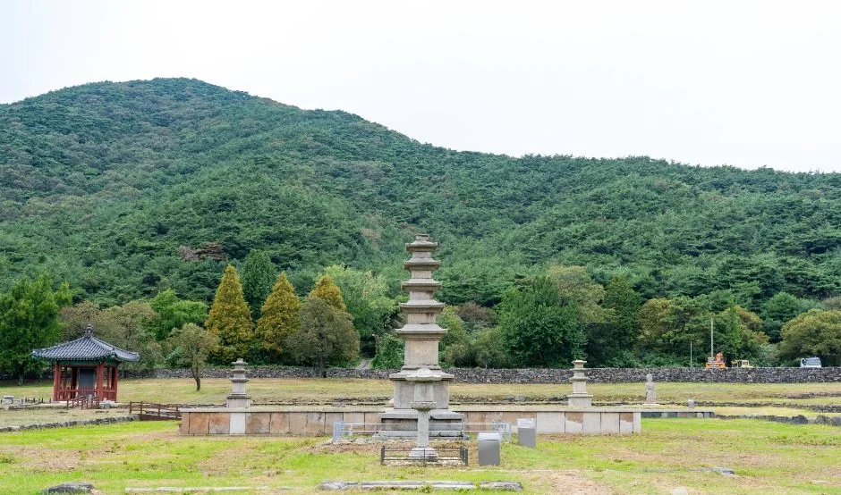
▲ 성주사지 전경. 촬영 시기는 자료에 없고 잎이 푸른 사진이다 ⓒ 한국관광공사 · 공공누리 제1유형
"절은 없다는데 가 볼 게 있을까? 늦가을에 성주사지만 보고 올까, 휴양림까지 묶을까?" 이 글은 2026년 10월 20일 기준으로 보령시, 국가유산청, 한국관광공사, 숲나들e 공개 자료를 대조해 성주사지의 볼거리와 입장·운영·주차, 가까운 성주산자연휴양림 요금을 정리했다.
결론부터 말하면 성주사지에는 건물은 없어도 국보 1점과 보물 석탑 4기가 남아 있고, 성주산자연휴양림 입장료는 블로그에 흔한 1,000원이 아니라 2026년 1월 1일부터 어른 1,500원이다.
💡 먼저 결론
성주사지(사적 제307호)는 한국관광공사 정보상 상시 개방, 연중무휴, 주차 가능이다. 옆 성주사지 천년역사관은 보령시 안내상 09:00~17:00, 매주 월요일 휴관이다. 성주산자연휴양림은 어른 1,500원, 중·소형 주차 3,000원(숲나들e 안내, 2026년 1월 1일 인상). 야영장은 2026년 12월 1일부터 2027년 2월 28일까지 휴장한다.
▲ 성주사지 전경. 산으로 둘러싸인 평지에 석탑과 탑비각이 보인다. 촬영 시기는 자료에 없고, 잎이 푸른 사진이라 늦가을 모습은 아니다. ⓒ 한국관광공사 · 공공누리 제1유형
1. 건물은 없는데 무엇이 남았나
성주사지는 보령시 성주면 성주산(676.7m) 남쪽 골짜기의 절터다. 한국관광공사 소개에 따르면 성주사는 6세기경 백제 법왕 때 오합사라는 이름으로 창건되었고, 통일신라 말기에 성주사로 이름이 바뀐 것으로 전해진다. 통일신라 말 9산선문 가운데 하나로 꼽히며, 전성기에는 총 천여 칸에 승려 2,000여 명 규모였다고 한다.
지금은 목조 건물이 남아 있지 않고, 발굴로 금당지·삼천불전지·회랑지·중문지 같은 건물터가 드러났다. 보령시는 이곳이 산골에 있으면서도 평지 가람 형식을 택한 당대 최대 규모의 사찰터라고 소개한다. 1984년 8월 13일 사적으로 지정되었다. 보령시 성주사지 안내 바로가기
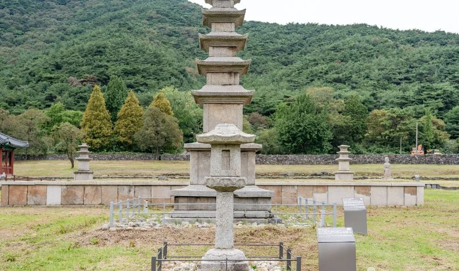
▲ 성주사지 오층석탑(보물 제19호)과 주변 절터. 촬영 시기는 자료에 없다. ⓒ 한국관광공사 · 공공누리 제1유형
2. 탑 4기와 탑비 — 지정 현황 한눈에
국가유산청이 2019년 동 삼층석탑 보물 지정을 예고하며 정리한 성주사지의 지정 현황은 아래와 같다. 한국민족문화대백과사전은 동 삼층석탑이 2019년 3월 28일 보물로 지정되었다고 적었고, 한국학중앙연구원 계열 문화재 위키는 이를 보물 제2021호로 적는다(국가유산청 원문에서 직접 확인하지는 못했다). 참고로 국가유산청은 2021년 11월 19일부터 국보·보물·사적 등을 표기할 때 지정번호를 쓰지 않는 방식으로 바꿨으므로, 아래 번호는 지정 당시 번호이고 요즘 안내판·공식 표기에는 빠져 있을 수 있다.
| 대상 | 지정 | 확인한 내용 |
|---|---|---|
| 성주사지 | 사적 제307호 | 1984년 8월 13일 지정, 보령시 관리 |
| 낭혜화상탑비 | 국보 제8호 | 비문은 최치원이 지었다고 한국관광공사가 설명 |
| 오층석탑 | 보물 제19호 | 통일신라 후기로 추정(한국민족문화대백과사전) |
| 중앙 삼층석탑 | 보물 제20호 | 금당 뒤편 3기 중 가운데 |
| 서 삼층석탑 | 보물 제47호 | 금당 뒤편 3기 중 서쪽 |
| 동 삼층석탑 | 보물 제2021호(2019년 3월 28일 지정) | 예전 충청남도 유형문화재 제26호. 번호는 문화재 위키 기준이라 국가유산청 원문 확인은 못 함 |
| 석계단·석불입상 | 충남 문화재자료(제140호·제373호) | 한국민족문화대백과사전 기준. 석계단 사자상은 1986년 도난 뒤 재현품 |
국가유산청은 금당 뒤편에 탑 3기를 배치한 가람 배치가 국내에 유례가 없다고 설명한다. 이것이 성주사지를 "탑 보러 가는 절터"로 만드는 이유다. 국가유산청 보도자료 바로가기
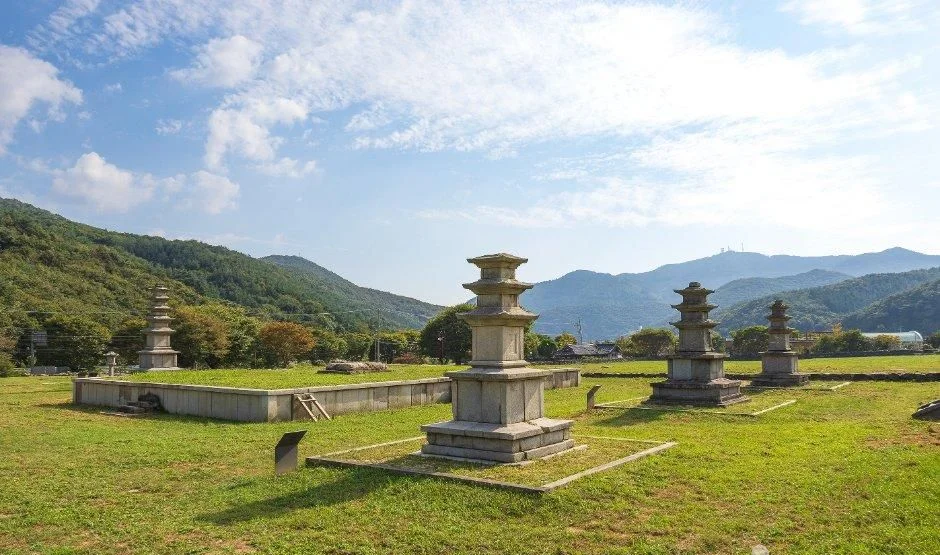
▲ 석탑이 줄지어 선 성주사지 중심부. 촬영 시기는 자료에 없다. ⓒ 한국관광공사 · 공공누리 제1유형
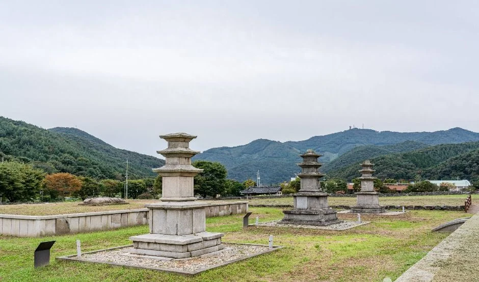
▲ 금당 뒤편으로 나란히 선 삼층석탑. 촬영 시기는 자료에 없다. ⓒ 한국관광공사 · 공공누리 제1유형
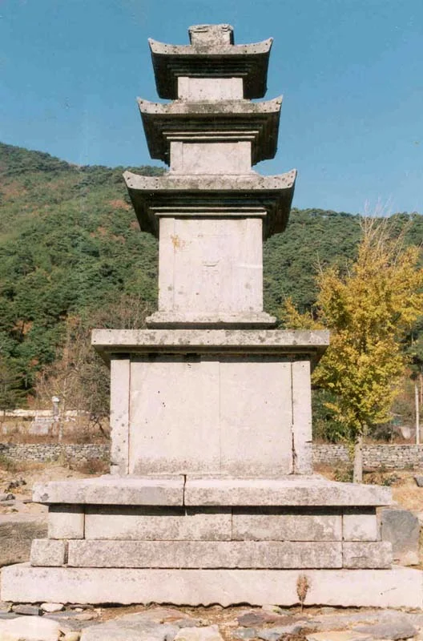
▲ 성주사지 서 삼층석탑. 잎이 노랗게 물든 나무가 옆에 보이는 가을빛 사진이다(정확한 촬영 연도는 자료가 불분명하다). ⓒ 국가유산청 · 공공누리 제1유형(위키미디어 커먼스)
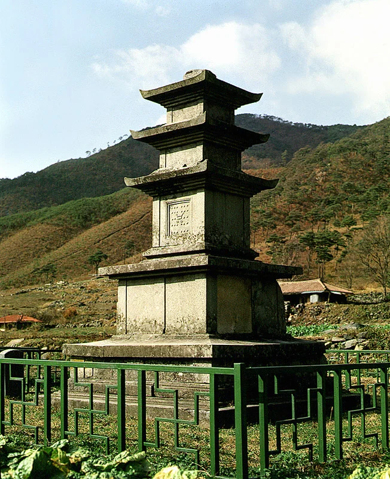
▲ 성주사지 중앙 삼층석탑. 산비탈이 갈색으로 보이는 늦가을~겨울 무렵의 사진으로 보이나 촬영 시기는 자료에 없다. ⓒ 국가유산청 · 공공누리 제1유형(위키미디어 커먼스)
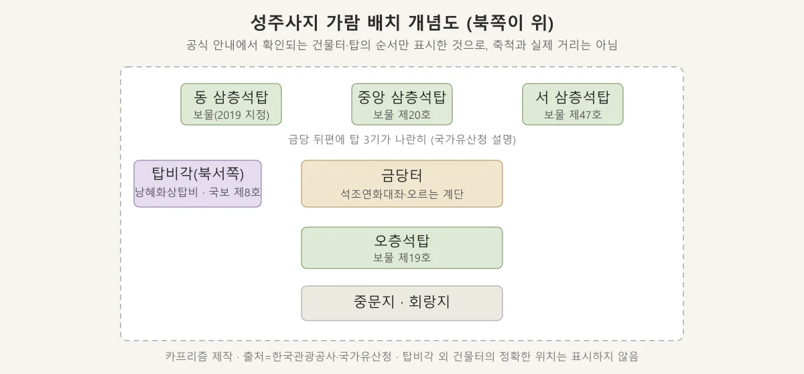
▲ 가람 배치 개념도. 축척과 거리는 공식 수치가 없어 표기하지 않았다. 카프리즘 제작, 출처=한국관광공사·국가유산청
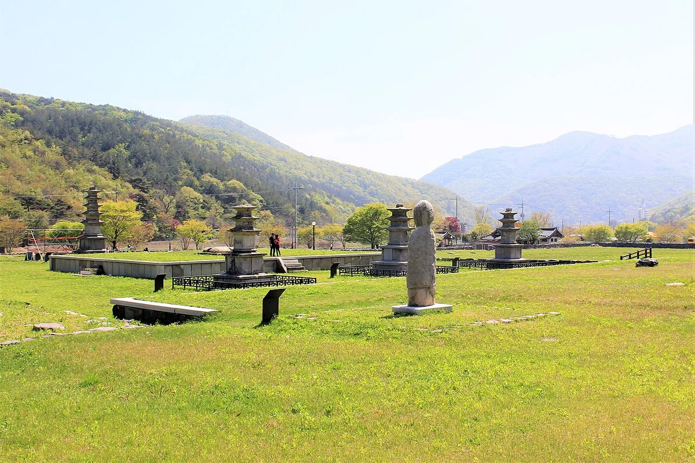
▲ 성주사지 전경. 커먼스 기록상 2018년 4월 29일 촬영으로, 늦가을·겨울 풍경은 이 사진과 다르다. ⓒ 위키미디어 커먼스 Trainholic · CC BY-SA 4.0
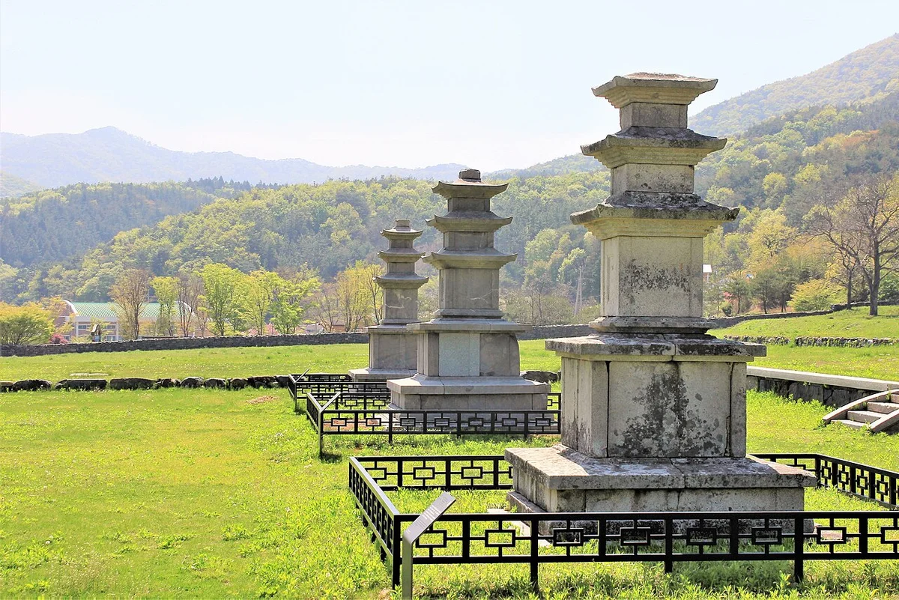
▲ 서·중앙·동 삼층석탑. 2018년 4월 29일 촬영(커먼스 기록). 단풍철 사진이 아니므로 계절 비교용으로만 본다. ⓒ 위키미디어 커먼스 Trainholic · CC BY-SA 4.0
3. 입장·운영·주차 — 확인된 것과 못 한 것
성주사지는 유적 자체가 열린 들판이라 입장 시간이 따로 없다. 한국관광공사 정보에는 이용시간 "상시 개방", 휴무 "연중무휴", 주차 "가능"으로 나온다. 다만 주차장 규모와 주차 요금은 공식 자료에서 확인하지 못했다. 보령시 성주사지 안내 페이지에도 이용시간과 주차 정보는 없다.
| 항목 | 확인한 내용 | 근거 |
|---|---|---|
| 위치 | 충청남도 보령시 성주면 성주리 72 | 보령시 |
| 이용시간·휴무 | 상시 개방, 연중무휴 | 한국관광공사 정보 기준 |
| 입장료 | 공식 자료에서 확인하지 못함 | — |
| 주차 | 가능(규모·요금은 확인하지 못함) | 한국관광공사 정보 기준 |
| 문의 | 보령시 관광과 국가유산관리팀 041-930-6582, 관광마케팅팀(해설사) 041-930-6566 | 보령시 |
| 접근 | 서해안고속도로 대천 IC·무창포 IC, 국도 40호선에서 심원계곡로 | 한국관광공사 |
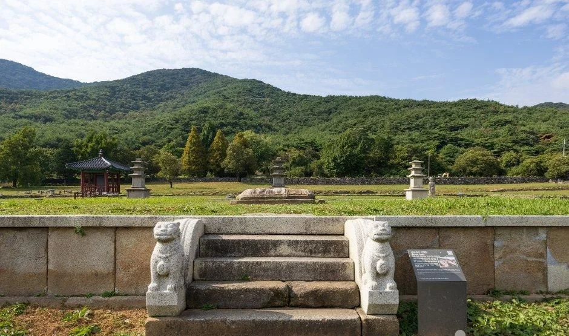
▲ 금당터로 오르는 석계단. 양옆 사자상은 1986년 도난 뒤 재현품이라고 한국민족문화대백과사전은 적었다. 촬영 시기는 자료에 없다. ⓒ 한국관광공사 · 공공누리 제1유형
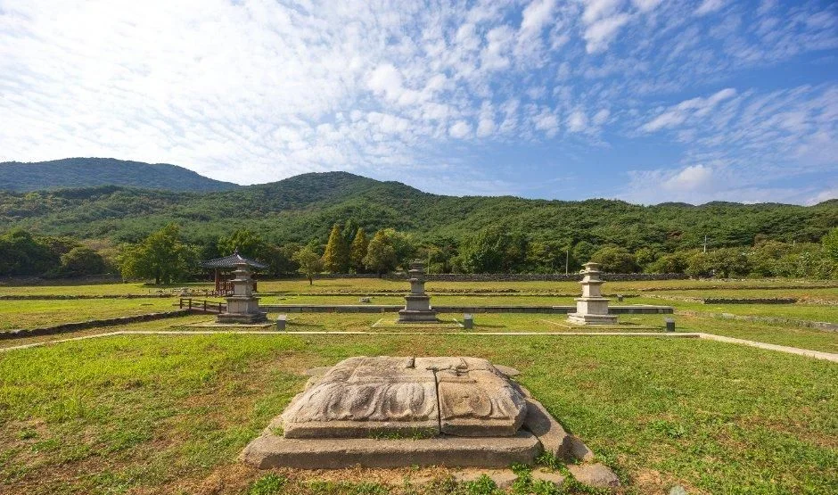
▲ 금당터 가운데의 석조연화대좌. 촬영 시기는 자료에 없다. ⓒ 한국관광공사 · 공공누리 제1유형
4. 천년역사관 — 문을 닫는 시간이 먼저
성주사지 바로 옆에 있는 성주사지 천년역사관(심원계곡로 93)은 보령시 안내상 운영시간 09:00~17:00, 매주 월요일 휴관이다. 1월 1일과 설날·추석 대체공휴일이면 화요일에도 쉰다. 같은 보령시 누리집의 열린마당 공지에는 평일 09:00~18:00로 적힌 곳도 있어 두 표기가 엇갈리므로, 늦게 도착한다면 041-933-6558로 먼저 확인하는 편이 안전하다. 관람료는 확인하지 못했다.
상설전시는 홍보실, 영상체험실, 어린이 체험관, 야외전시로 구성된다고 안내된다. 천년역사관 공식 안내 바로가기
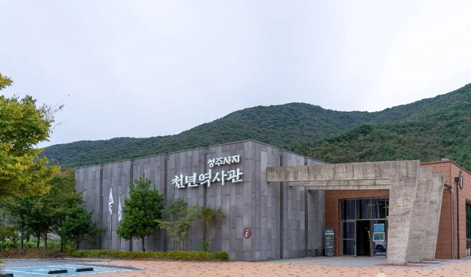
▲ 성주사지 천년역사관 외관. 촬영 시기는 자료에 없다. ⓒ 한국관광공사 · 공공누리 제1유형
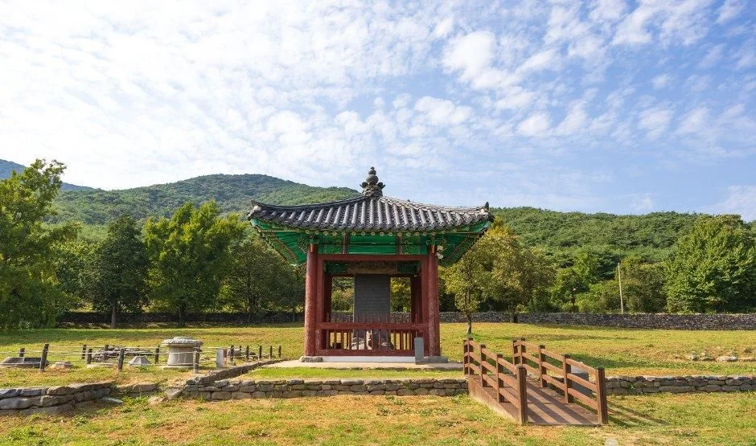
▲ 절터 북서쪽의 전각. 한국관광공사는 이 안에 낭혜화상탑비가 있다고 소개한다. 촬영 시기는 자료에 없다. ⓒ 한국관광공사 · 공공누리 제1유형
5. 성주산자연휴양림 — 블로그 요금과 달라졌다
성주산자연휴양림은 성주면 화장골길 57-228에 있고, 한국관광공사 좌표 기준으로 성주사지와 직선 1.5km 안팎이다(도로 거리는 확인하지 못함). 한국관광공사 정보의 이용시간은 09:00~18:00, 연중무휴이고 자세한 사항은 전화 문의를 안내한다. 화장골 계곡과 천연 활엽수 숲이 소개되며, 보령시 누리집은 성주리 화장골의 4km 계곡을 산림욕 명소로 소개한다.
여행 블로그와 일부 매체에는 입장료 1,000원, 주차 2,000원이 아직 남아 있지만, 숲나들e 안내는 2026년 1월 1일부터 인상되었다고 밝힌다. 최신 요금은 숲나들e 성주산자연휴양림 안내 바로가기에서 확인하자.
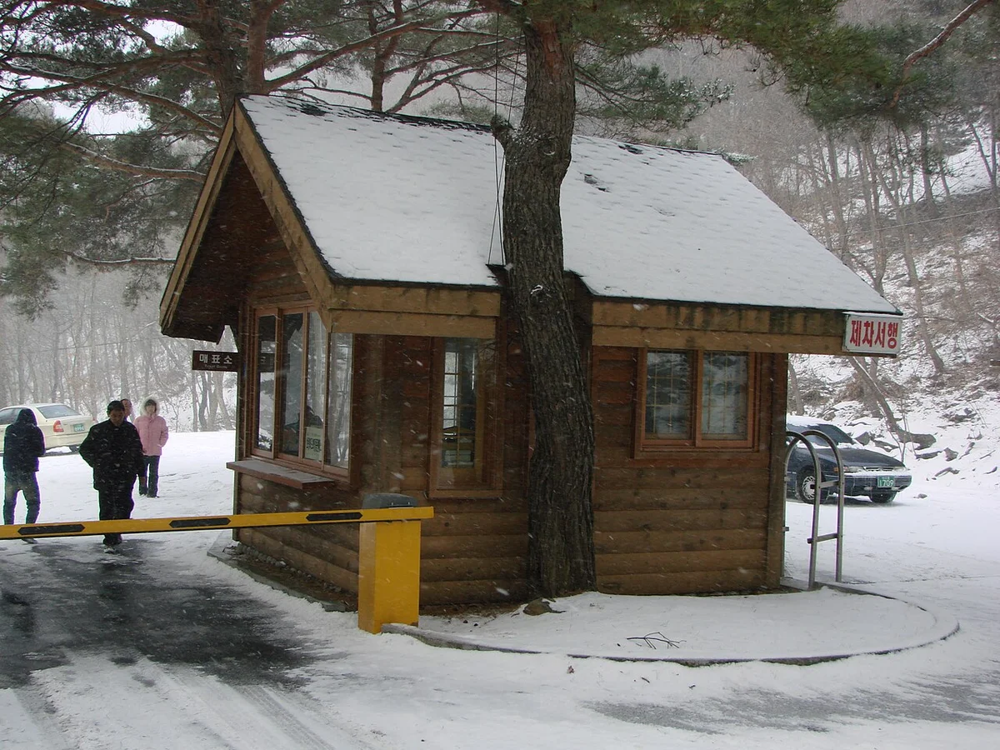
▲ 성주산 휴양림 매표소. 2009년 1월 24일 촬영된 눈 덮인 사진이라 현재 시설의 모습과 다를 수 있다. ⓒ 위키미디어 커먼스 Pectus Solentis · CC BY-SA 2.0 KR
| 구분 | 개인 | 단체(20명 이상) |
|---|---|---|
| 어른 | 1,500원 | 1,200원 |
| 청소년·군인 | 1,000원 | 800원 |
| 어린이 | 500원 | 400원 |
| 주차 중·소형 | 3,000원(친환경 1,500원, 경차 할인 1,500원) | — |
| 주차 대형 | 5,000원(친환경 2,500원) | — |
숲나들e 안내에 따르면 바베큐장은 3~11월에만 이용할 수 있고, 야영장은 2026년 12월 1일부터 2027년 2월 28일까지 휴장한다. 주차장 차박은 금지다. 문의는 휴양림 041-934-7133, 숲나들e 고객센터 1588-3250(평일 09~18시)이다.
✅ 요금·운영 체크
1) 블로그의 1,000원·2,000원은 예전 요금일 수 있음 2) 휴양림 이용시간은 한국관광공사 정보 기준이며 숲나들e 안내에는 시간이 없었음 3) 12월 이후 야영시설 휴장 4) 방문 전 전화 확인 권장.
6. 가까운 곳 — 석탄박물관과 무궁화수목원
같은 성주면에는 보령시가 안내하는 두 곳이 더 있다. 둘 다 월요일에 쉬고, 늦가을~겨울에는 문을 닫는 시각이 앞당겨진다는 점이 핵심이다.
| 시설 | 운영시간 | 휴관·요금 |
|---|---|---|
| 보령석탄박물관(성주산로 508) | 하절기(3~10월) 09~18시, 동절기(11~2월) 17시까지(매표는 종료 30분 전) | 월요일·1월 1일·설·추석 연휴·공휴일 다음 날 휴관. 어른 2,000원, 만 65세 이상 무료 |
| 보령무궁화수목원(성주산로 318-57) | 3~10월 09~18시, 11~2월 09~17시 | 월요일·1월 1일·설·추석 휴관. 입장료·주차는 확인하지 못함(041-931-6092) |
한국관광공사 정보에는 석탄박물관의 하절기가 3~10월, 동절기가 11~2월로 적혀 있어 이 기사 기준일(10월 20일) 현재는 하절기 시간이지만 11월 1일부터는 17시 마감이다. 같은 보령의 서해 쪽 일정은 보령 무창포 신비의 바닷길 대하·전어 축제 기사에 정리했다.
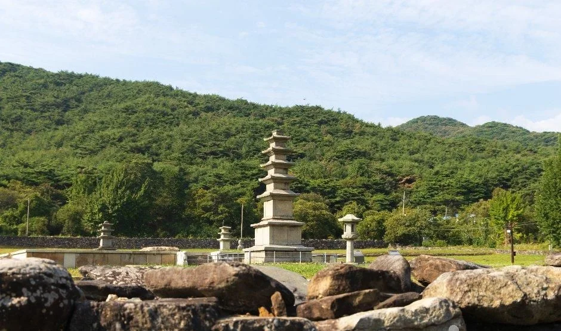
▲ 바위 너머로 보이는 성주사지 석탑. 촬영 시기는 자료에 없다. ⓒ 한국관광공사 · 공공누리 제1유형
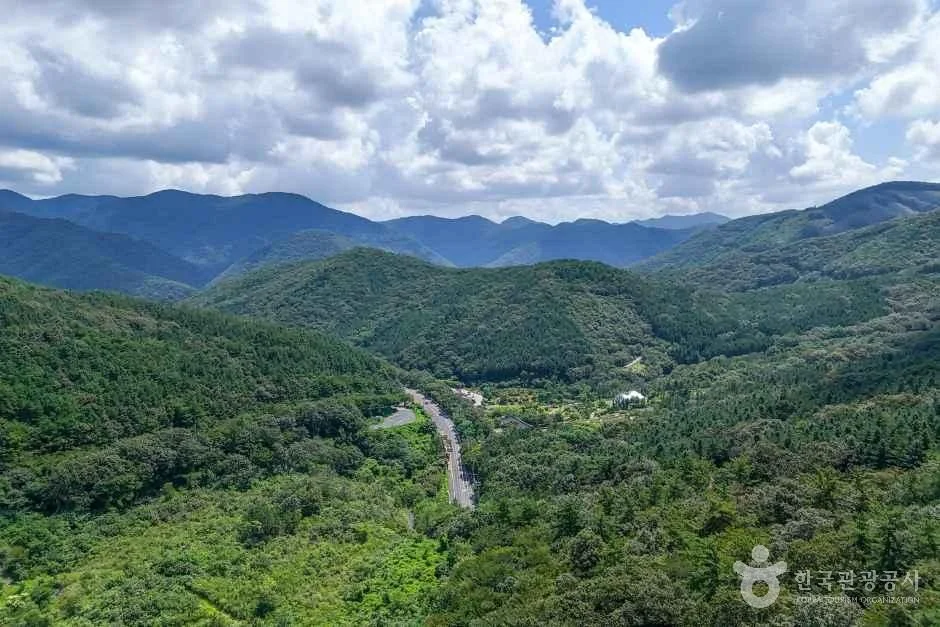
▲ 성주산 일출전망대 소개 사진으로 올라온 산세 조망(인근). 잎이 푸른 시기로 보이며 촬영 시기는 자료에 없다. ⓒ 한국관광공사 · 공공누리 제1유형
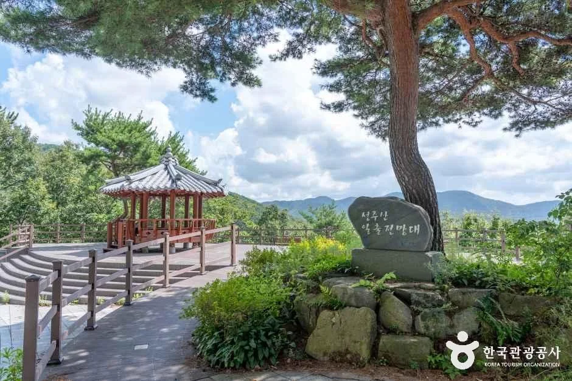
▲ 성주산 일출전망대(보령시 성주면 성주리)의 정자(인근 명소). 촬영 시기는 자료에 없다. ⓒ 한국관광공사 · 공공누리 제1유형
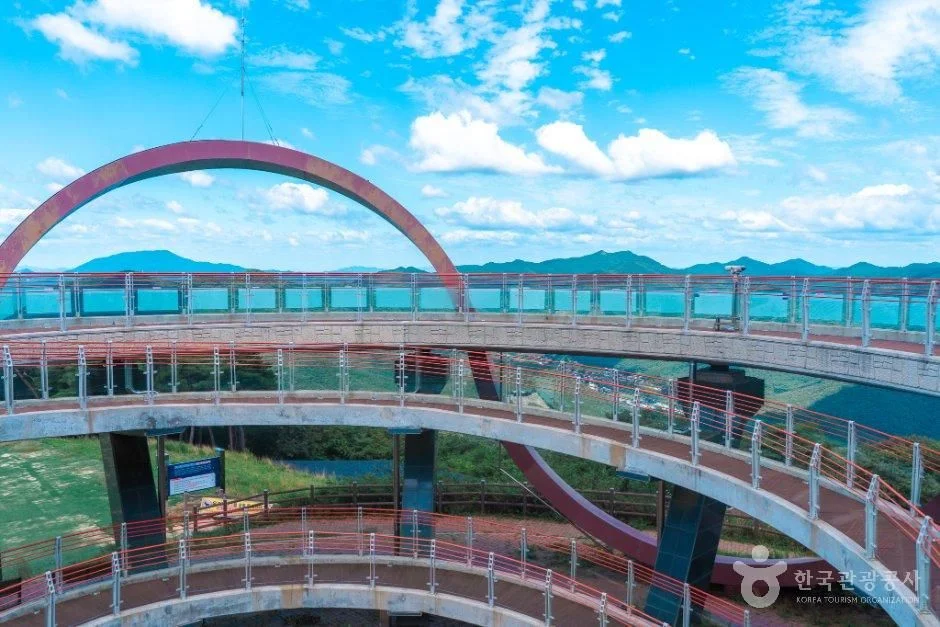
▲ 성주산 낙조전망대(성주면 개화리)의 전망 구조물(인근 명소). 촬영 시기는 자료에 없다. ⓒ 한국관광공사 · 공공누리 제1유형
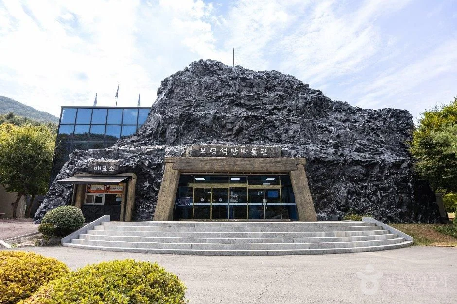
▲ 보령석탄박물관 외관(인근). 촬영 시기는 자료에 없다. ⓒ 한국관광공사 · 공공누리 제1유형
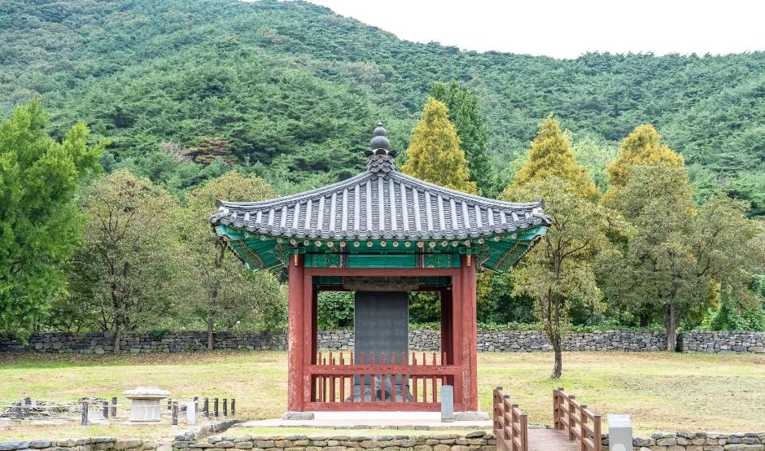
▲ 절터 안의 전각 일대. 촬영 시기는 자료에 없고, 일부 나무가 노랗게 보이는 사진이다. ⓒ 한국관광공사 · 공공누리 제1유형
7. 늦가을 반나절 코스 — 17시 폐관을 기준으로
아래는 공식 운영시간을 기준으로 짠 예시이고, 이동 시간은 공식 수치가 없어 적지 않는다. 해가 일찍 지는 계절이니 17시 폐관 시설을 앞에 두는 순서를 권한다(운영시간에서 끌어낸 제안이다).
| 순서 | 할 일 | 체크 |
|---|---|---|
| 오전 | 성주사지 석탑·탑비각 둘러보기 | 상시 개방, 주차 가능(한국관광공사 정보) |
| 낮 | 천년역사관 관람 | 09~17시, 월요일 휴관 |
| 오후 | 성주산자연휴양림 화장골 산책 | 입장료 1,500원·주차 3,000원 |
| 선택 | 석탄박물관 또는 무궁화수목원 | 동절기 17시 마감, 월요일 휴관 |
단풍 시기는 해마다 달라서 산림청 자료를 보고 정하는 편이 낫다. 가을 단풍 예측은 산림청 2026 가을 단풍 절정 지도 기사에, 성주사지가 별 사진 소재로 언급된 내용은 별 보러 떠나는 드라이브 기사에 있다. 같은 절터 계열은 익산 미륵사지 미디어아트 기사도 참고하자.
✅ 출발 전 체크
1) 성주사지는 상시 개방이나 주차 요금·규모는 미확인 2) 천년역사관 17시 폐관·월요일 휴관 3) 휴양림 어른 1,500원·주차 3,000원 4) 대부분의 사진은 잎이 푸른 시기로 보이며, 늦가을 느낌이 나는 사진은 석탑 2장과 탑비 1장뿐임.
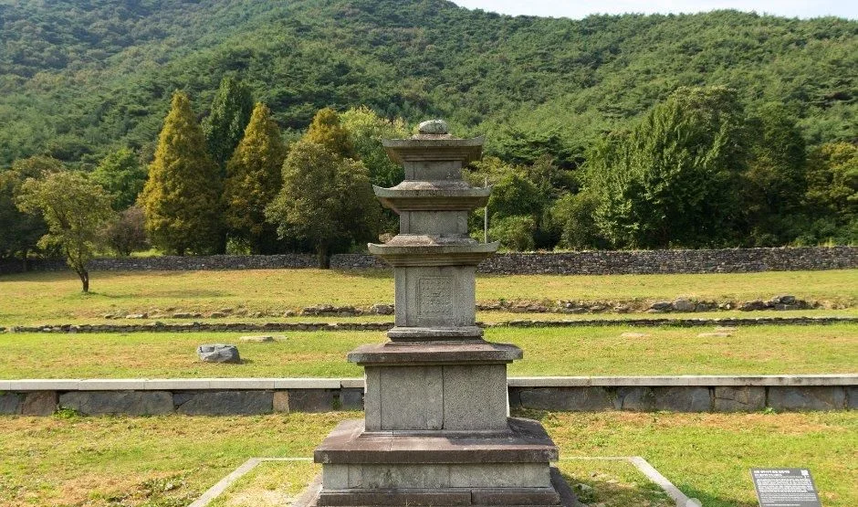
▲ 성주사지의 석탑 한 기. 촬영 시기는 자료에 없다. ⓒ 한국관광공사 · 공공누리 제1유형
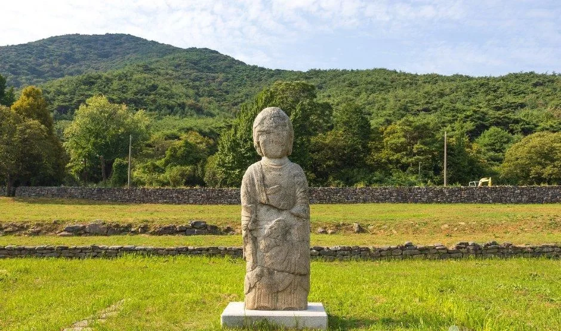
▲ 성주사지 석불입상. 조선 시대 작품으로 소개되며 얼굴 등이 훼손되었다고 한다. 촬영 시기는 자료에 없다. ⓒ 한국관광공사 · 공공누리 제1유형
8. 정리
성주사지는 건물 없이 국보 낭혜화상탑비와 보물 석탑 4기가 남은 사적(제307호)이며, 한국관광공사 정보상 상시 개방·연중무휴다. 옆 천년역사관은 09~17시, 월요일 휴관이고, 성주산자연휴양림은 어른 1,500원·중소형 주차 3,000원이다.
성주사지 입장료·주차 요금, 천년역사관 관람료, 휴양림 공식 이용시간(숲나들e 안내에는 없음)은 확인하지 못했다. 이 기사는 2026년 10월 20일 기준이므로 방문 전 보령시 관광과(041-930-6582)나 휴양림(041-934-7133)에 확인하자.